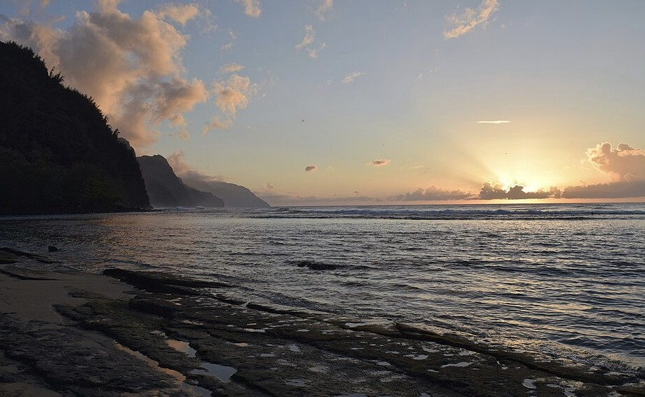

Hāʻena State Park
Place: Hāʻena State Park, Kauaʻi
Type: State park / cultural landscape / gateway to the Nā Pali Coast
Story it tells: A sacred Hawaiian landscape where ancient agriculture, hula traditions, and community stewardship have shaped one of Kauaʻi's most culturally significant places for centuries.

Hāʻena State Park occupies roughly 230 acres at the western end of Kūhiō Highway, where the road ends and the rugged Nā Pali Coast begins. The park preserves one of Hawaiʻi's most important cultural landscapes. Within its boundaries lie Keʻe Beach, the trailhead to the Kalalau Trail, ancient agricultural terraces, sacred temples, and centuries of Hawaiian history woven together beneath the towering cliffs of Makana.
The name Hāʻena translates as "red-hot" or "burning heat." The meaning is associated with the brilliant light that illuminates the cliffs at sunrise and sunset, but it also reflects the spiritual energy connected to this place. High above the shoreline sits Ka Ulu o Laka, a sacred temple complex dedicated to Laka, the goddess of hula, making Hāʻena one of the most revered centers of hula tradition in the Hawaiian Islands.
Before the arrival of Europeans, Hāʻena was a thriving community sustained by an intricate system of loʻi kalo (irrigated taro terraces). Fresh water diverted from Limahuli Stream, flowed through ʻauwai (irrigation ditches), nourishing extensive fields before returning to the sea. Offshore, the fringing reef surrounding Keʻe Beach functioned as a productive fishing ground where families harvested reef fish while observing seasonal kapu that helped ensure marine resources remained abundant.
Hāʻena was also renowned as a place of extraordinary mana. Students traveled from throughout the Hawaiian Islands to study hula at Ka Ulu o Laka, where advanced practitioners underwent rigorous spiritual and physical training before completing traditional ʻūniki graduation ceremonies near the shoreline. Oral traditions also describe Hāʻena as one of the few districts with successive female aliʻi, strengthening its enduring connection to Laka and the cultural arts.
The nineteenth century brought profound changes. Following the Great Māhele, the Hāʻena ahupuaʻa eventually came under the ownership of William Kinney. Fearing displacement from their ancestral homeland, thirty-eight Native Hawaiian families joined together in 1875 to purchase the entire ahupuaʻa collectively, forming the Hui Kūʻai ʻĀina o Hāʻena. For nearly a century the Hui managed the land cooperatively, blending Western legal ownership with traditional Hawaiian stewardship while continuing to farm taro, fish the reef, and care for their ancestral home.
That continuity ended during the creation of Hāʻena State Park. As Hawaiʻi expanded its state park system during the 1960s, private lands were condemned to establish a public park, which officially opened in 1972. Families whose ancestors had lived and farmed the land for generations were displaced, while increasing tourism gradually overwhelmed roads, archaeological sites, and the overall ecosystem.
The story, however, did not end with displacement. After catastrophic flooding struck Kauaʻi's North Shore in 2018, descendants of the original Hui families formed Hui Makaʻāinana o Makana and partnered with the State of Hawaiʻi to revise how the park is managed and find a healthier balance. Today, the organization helps oversee the reservation system, visitor limits, and restoration projects that protect ancient loʻi kalo, trails, and sacred sites. The modern management model seeks to balance public access with cultural preservation and ecological restoration and management.
Visitors today often come to snorkel at Keʻe Beach, hike the Kalalau Trail, or explore nearby Maniniholo Dry Cave. These attractions represent only part of Hāʻena's story. The park remains a living cultural landscape where Hawaiian traditions continue alongside recreation, and where the descendants of those who once fought to keep their homeland now play a pivotal role in its stewardship. Few places in Hawaiʻi better illustrate how history, language, conservation, and community support one another for the collective good.